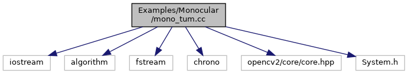
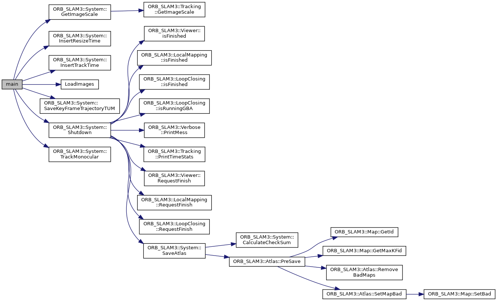

#include <iostream>#include <algorithm>#include <fstream>#include <chrono>#include <opencv2/core/core.hpp>#include <System.h>
Include dependency graph for mono_tum.cc:

Go to the source code of this file.
Functions | |
| void | LoadImages (const string &strFile, vector< string > &vstrImageFilenames, vector< double > &vTimestamps) |
| int | main (int argc, char **argv) |
Function Documentation
◆ LoadImages()
| void LoadImages | ( | const string & | strFile, |
| vector< string > & | vstrImageFilenames, | ||
| vector< double > & | vTimestamps | ||
| ) |
Definition at line 157 of file mono_tum.cc.
Referenced by main().
Here is the caller graph for this function:

◆ main()
Definition at line 33 of file mono_tum.cc.
37 cerr << endl << "Usage: ./mono_tum path_to_vocabulary path_to_settings path_to_sequence" << endl;
69 im = cv::imread(string(argv[3])+"/"+vstrImageFilenames[ni],cv::IMREAD_UNCHANGED); //,cv::IMREAD_UNCHANGED);
97 t_resize = std::chrono::duration_cast<std::chrono::duration<double,std::milli> >(t_End_Resize - t_Start_Resize).count();
References ORB_SLAM3::System::GetImageScale(), LoadImages(), ORB_SLAM3::System::MONOCULAR, ORB_SLAM3::System::SaveKeyFrameTrajectoryTUM(), ORB_SLAM3::System::Shutdown(), and ORB_SLAM3::System::TrackMonocular().
Here is the call graph for this function:
